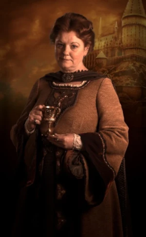
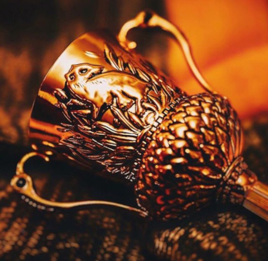
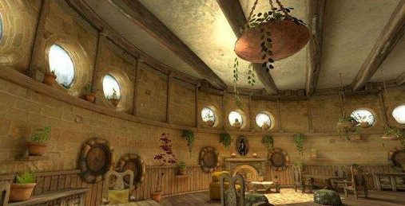
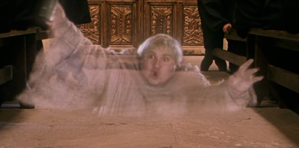

Quem fundou a casa da Lufa-Lufa ?

Helga Hufflepuff era uma bruxa da era medieval, e fundadora da casa que levou o seu nome na Escola de Magia e Bruxaria de Hogwarts. Originária do País de Gales, ela se diferenciava dos outros fundadores por não procurar nenhum traço específico em seus alunos, tratando todos com igualdade e ensinando tudo que sabia a respeito de magia.
Amiga muito próxima de Rowena Ravenclaw, a fundadora da Corvinal, Helga era experiente em feitiços relacionados a comida, de modo que a maior parte de suas receitas ainda são utilizadas nos banquetes em Hogwarts. Ela foi a responsável por trazer elfos domésticos para trabalharem nas cozinhas da Escola, onde não seriam maltratados ou expostos à condições desumanas.
Ela escolheu ensinar qualquer estudante que as outras três Casas não quisessem, como menciona (livro 1 capitulo 7) o Chapéu Seletor, os Hufflepuffs são leais e vieram a ser conhecidos como os bruxos e bruxas mais justos.
Algumas curiosidades interessantes da casa.
Símbolo da Lufa-Lufa.
Representando a terra, a Lufa-Lufa tem como cores o amarelo e preto, e seu animal símbolo é um texugo, e ele foi escolhido justamente porque sua aparência fofinha faz com que o subestimem. No fim, ele sabe se defender e defender seus amigos e família como ninguém, tal qual os Lufanos. Carregar este berloque é motivo de muito orgulho.
Nos planos originais de J.K. Rowling, a casa seria representada por um urso.

A taça de Helga Hufflepuff.
Helga Hufflepuff tinha uma relíquia bem distinta como recordação e que foi passada de geração em geração: uma pequena taça dourada, com duas alças laterais e um texugo entalhado, além de algumas joias.
Assim como os outros objetos dos fundadores, a taça possui poderes, ainda que eles nunca sejam explicitados ao longo da série de livros e filmes, e assim como o diadema de Corvinal e o medalhão de Sonserina, foi transformado em uma Horcrux por Voldemort, que o roubou de uma descendente de Helga.

Sala comunal.
Sendo a única sala comunal que Harry não visita durante toda sua estadia em Hogwarts, a da Lufa-Lufa é localizada próximo à cozinha de Hogwarts. É a única casa que possui feitiços repelentes contra alunos de outras casas, e possui acesso através de alguns barris estocados do lado de fora.
O ambiente é descrito como aconchegante e familiar, e é espaçoso, possui o teto baixo e com decoração que relembra o elemento terra, além de plantas espalhadas por todos os cantos.

O fantasma da casa.
O fantasma da Lufa-Lufa é o Frei Gorducho. Pouco se sabe a seu respeito na série, exceto que foi um bruxo que estudou em Hogwarts, e depois passou a vida se dedicando ao clero. Sua morte se deu porque um clérigo suspeitou de suas habilidades de curar uma certa doença apenas olhando para o enfermo, acusando-o de heresia e executando-o.
